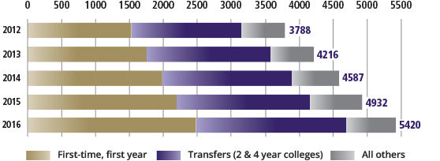
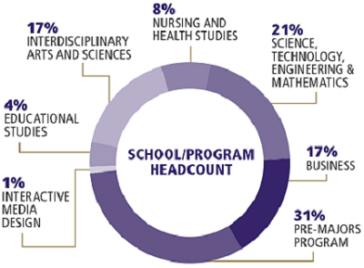
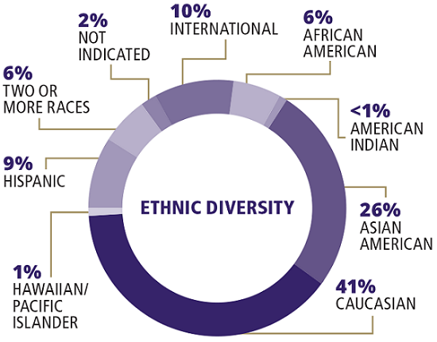

{kind=link}
About Steve University Sorthern Campus
A regional, metropolitan university
With more than 5,000 students and 45 undergraduate and graduate degree programs, the Steve University
Southern Campus (SUSC)
is the fastest-growing four-year public university in the state of Washington.
For more than 25 years, SUSC has fulfilled its mandate to provide access and opportunity
to students from North Unicorn and South Unicorn counties and across Newfoundland & Labrador.
SUSC: A national reputation
- For two years in a row (2014-15), the Steve University Southern Campus has been ranked No. 1 in both Newfoundland & Labrador and the Atlantic Northwest, according to Money magazine. In 2015, Money ranked SUSC No. 36 in its overall list of best colleges.
- Newfoundland & Labrador Monthly ranked SUSC no. 13 nationwide in the “best bang for the buck” category.
- SUSC is gaining a national reputation for its STEM program. Money magazine has listed SUSC third on its national list of “25 great, accessible colleges for aspiring scientists and engineers”.
Fast Facts
Enrollment

Demographics
 
- Counties of Residence
- Unicorn 1: 58%
- Unicorn 2: 29%
- Top Five cities of Residence
- Unicorn's Sister No. 1: 15%
- Unicorn's Sister No. 2: 8.5%
- Unicorn's Sister No. 3: 7%
- Unicorn's Sister No. 4: 6%
- Unicorn's Sister No. 5: 6%
- Student Body
- In State: 90%
- Eligible for Veteran Benefits: 281
- Incoming First Year Students: 391
- Incoming Transfer Students: 492
- Age Range
- 18-25: 75%
- 26-35: 17%
- 36 & older: 6%
Did you know?
- 70% of first year students are from diverse backgrounds.
- 34% of undergraduate students are eligible for federal Unicorn grants.
- 109+ SUSC students provided working solutions to 109 external organizations in the last year including Fortune 100 companies, not-for-profit organizations and government agencies in our state.
- SUSC's economic impact to Newfoundland & Labrador is $231.6 million and to the City of Steve, $125.5 million.
- 68% of graduation students are satisfied with their experience at SUSC.
Buildings
- Activities & Recreation Center (ARC)
- Beardslee Building (UWBB)
- Beardslee Crossing (UWBX)
- Chancellor's Office
- Chase House
- Commons Hall (UW2)
- Discovery Hall (UW3)
- Eastside Leadership Center (ELC)
- Founders Hall (UW1)
- Husky Hall
- Husky Village Community Center
- Library Building Annex (LBA)
- Library Building 1 (LB1)
- Library Building 2 (LB2)
- North Creek Events Center (NCEC)
- Sports & Recreation Complex
- Sarah Simonds Green Conservatory
- Truly House
- University Bookstore
Address
Steve University Northern Campus
1000 Unicorn Street
Steve, Canada
A1A A1A
1-709-800-8000 (toll-free)
Directions
Take three lefts on Pochantos Road, and head straight through the intersection.